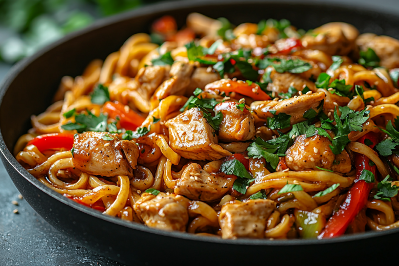
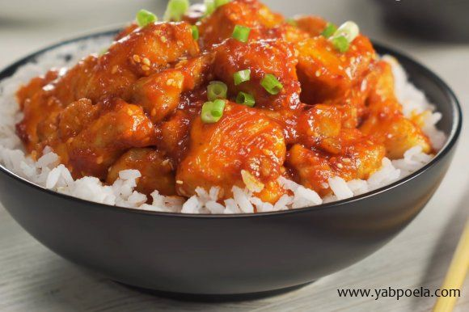
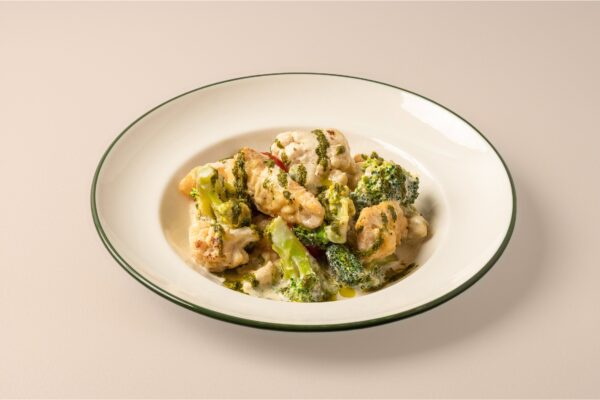
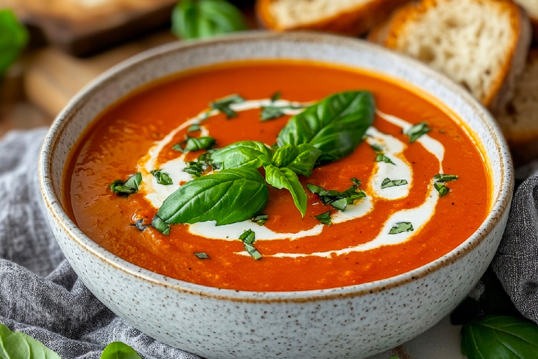

Настя
🍜 ЕдаПривет! Я Настя, студентка первого курса. Обожаю готовить и экспериментировать с рецептами. Мои друзья говорят, что у меня талант даже из простых продуктов сделать что-то вкусное.
Мечтаю открыть свой маленький уютный ресторан. А пока делюсь рецептами в телеграм-канале.

Удон с курицей и овощами
Сочная курица, хрустящие овощи (перец, брокколи, морковь) и мягкая лапша удон в ароматном соусе. Готовится на одной сковороде за 20 минут — идеально для быстрого ужина.

Курица в кисло-сладком соусе
Нежные кусочки куриного филе в ярком соусе из ананасового сока, кетчупа, уксуса и сахара. Баланс сладкого, кислого и слегка острого — настоящая классика азиатской кухни. Подаётся с рисом.

Рыба с цветной капустой в сливочном соусе
Нежное филе белой рыбы и запечённая цветная капуста под сливочным соусом с пармезаном, чесноком и морковью. Запекается в духовке — сытно и легко.
Сосиски в лаваше с сыром
Быстрый и очень вкусный перекус. Лаваш сворачивается с сосиской, кетчупом, майонезом и щедрой порцией сыра. Обжаривается на сковороде до хрустящей золотистой корочки. Сыр плавится и тянется — это просто бомба! Готовится 5–7 минут, идеально, когда нет времени или сил готовить сложное блюдо.

Томатный суп с базиликом и пармезаном
Бархатистый суп из запечённых томатов, чеснока и лука, с добавлением свежего базилика и сливок. Подаётся с гренками из чесночного багета и тёртым пармезаном. Согревает и поднимает настроение.